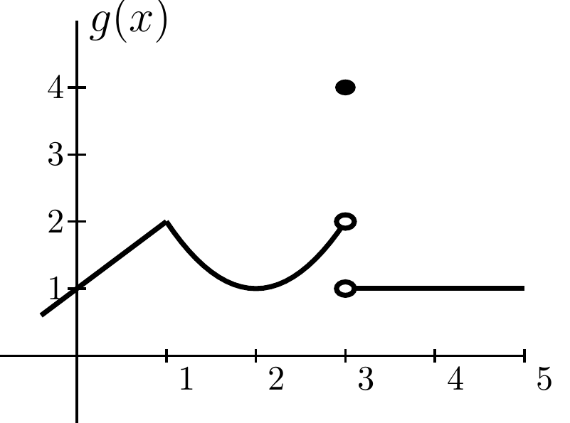
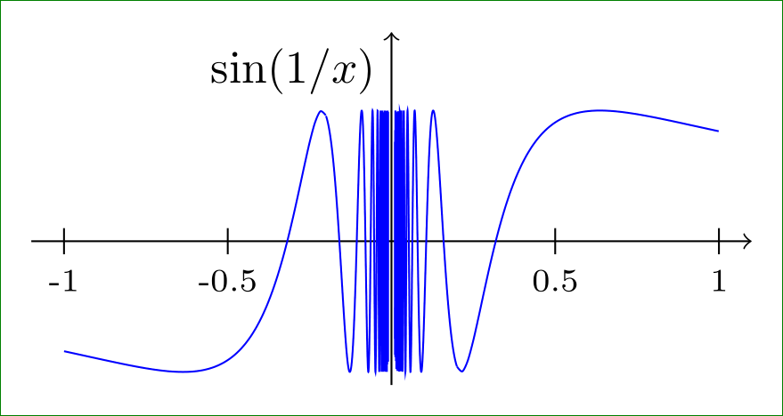
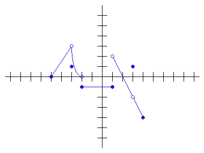

True or False. If \(f(x) = \frac{x^2 - 4}{x-2}\) and \(g(x) = x + 2\), then we can say the functions
\(f\) and \(g\) are equal.
True or False. As \(x\) increases to \(100, f(x) = 1/x\) gets closer and closer to 0, so
the limit as \(x\) goes to 100 of \(f(x)\) is 0. Be prepared to justify your answer.
True or False. \(\displaystyle \lim_{x\to a}f(x) = L\) means that if \(x_1\) is closer to a than \(x_2\) is, then
\(f(x_1)\) will be closer to \(L\) than \(f(x_2)\) is. Be prepared to justify your answer.
True or False. Whether or not \(\displaystyle \lim_{x\to a}f(x)\)exists, depends on how \(f(a)\) is defined.
True or False. If \(|k(x) - 2| < 0.01\) for all \(x\) sufficiently close to 3, then \(\displaystyle \lim_{x \to 3} k(x) = 2\).
Definition - Limit
Definition Let \(f\) be a function defined on an open interval containing point \(a\), but not neccessarily at \(a\).
Then the limit of \(f(x)\) as \(x\) approaches \(a\) is \(L\) written \(\displaystyle \lim_{x\to a}f(x) = L\) if \(f(x)\) can
be made as close to \(L\) as we like by taking \(x\) sufficiently close to \(a\).

What is the limit of \(g(x)\) shown in the graph above at \(x=1,2,3,4\)?
Example
True or False. Even though \(\frac{1}{x}\) doesn't exist when \(x=0\) the limit \(\displaystyle \lim_{x \to 0}\sin \left( \frac{1}{x} \right) = 0\).

Example
Consider the function \(\displaystyle f(t) = (1+t)^{1/t}\). We want to know what is happening as \(t\) approaches 0.
\(t\)
-.2
-.0015
-.00027
0
.00002
.008
.01
.5
\((1+t)^{1/t}\)
3.05176
2.72032
2.71865
***
2.71826
2.70749
2.70481
2.25
What do think the value is of \(\displaystyle \lim_{t \to 0} f(t)\)?
Example
You’re trying to guess \(\displaystyle \lim_{x \to 0} f(x)\). You plug in \(x = 0.1, 0.01, 0.001, ...\) and get
\(f(x) = 0\) for all these values. In fact, you’re told that for all \(n = 1, 2, ... , f(10^{-n})= 0\).
True or False: Since the sequence \(0.1, 0.01, 0.001, ...\) goes to 0, we know \(\displaystyle \lim_{x \to 0} f(x)=0\).
Example - One sided limits

Find the following limits using the graph above. If they do not exist, explain why.
The reason that \(\displaystyle \lim_{x \to 0}\sin \left( \frac{1}{x} \right) \) does not exist is:
because no matter how close \(x\) gets to 0, there are \(x\)’s near 0 for which \(\sin \left( \frac{1}{x} \right) =1\), and some for which \(\sin \left( \frac{1}{x} \right) =-1\).
because the function values oscillate around 0
because 1/0 is undefined
all of the above
\(\displaystyle \lim_{x\to 0} x^2 \sin(1/x)\)
because no matter how close \(x\) gets to 0, there are \(x\)’s near 0 for which \(\sin \left( \frac{1}{x} \right) =1\), and some for which \(\sin \left( \frac{1}{x} \right) =-1\).
does not exist because the function values oscillate around 0